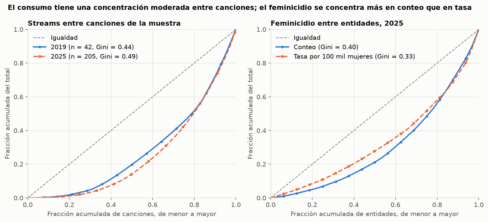
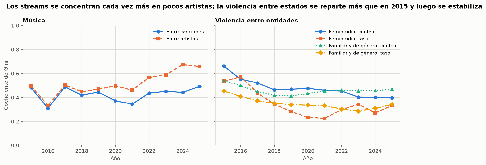
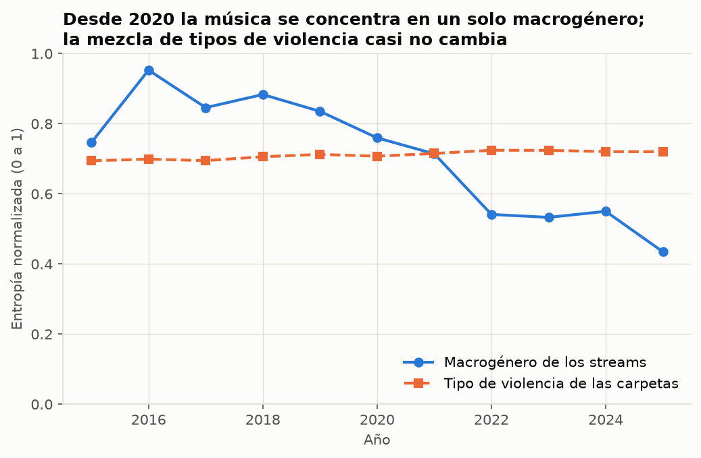

Concentración y heterogeneidad
Decisiones de medición
El valor de estas medidas depende de cómo se calculan, así que conviene decirlo antes de leerlas. En violencia la unidad es el estado; con municipios el Gini saldría mayor. En música las unidades son las canciones o los artistas que estuvieron en el chart ese año. Un estado sin carpetas en un año cuenta como una unidad con cero, mientras que las canciones solo cuentan en los años en que tuvieron streams, porque la muestra no tiene canciones fuera del chart.
Calculamos el Gini con conteos y con tasas, y para comparar estados usamos las tasas, porque el conteo mezcla la violencia con el tamaño de la población. La entropía la normalizamos dividiendo entre log₂ K, ya que crece con el número de categorías, y no agrupamos categorías raras en “otros”. En el macrogénero dejamos fuera a los artistas sin género y reportamos qué parte de los streams sí lo tiene. El Gini que usamos mide concentración de una cantidad entre unidades y no debe confundirse con el Gini impurity de los árboles de decisión.
Gini y curva de Lorenz
concentracion_gini.parquet.
| Variable | Unidad | 2015 | 2019 | 2025 |
|---|---|---|---|---|
| Streams entre canciones | canción | 0.48 | 0.44 | 0.49 |
| Streams entre artistas | artista | 0.49 | 0.47 | 0.66 |
| Feminicidio, conteo | entidad | 0.66 | 0.47 | 0.40 |
| Feminicidio, tasa | entidad | 0.54 | 0.28 | 0.33 |
| Violencia familiar, conteo | entidad | 0.54 | 0.41 | 0.47 |
| Violencia familiar, tasa | entidad | 0.45 | 0.34 | 0.34 |


En la música, la concentración entre canciones es moderada y estable, con un Gini entre 0.45 y 0.49: las canciones que entran al chart se escuchan de forma parecida entre sí (Figura 1). Entre artistas, en cambio, el Gini sube de 0.49 a 0.66 (Figura 2), porque cada vez menos artistas reúnen los streams. Para P1 esto significa que la proporción misógina del consumo dependerá cada vez más de lo que canten unos pocos artistas.
En la violencia, el feminicidio está más concentrado en conteo que en tasa, con 0.40 frente a 0.33 en 2025. Parte de la concentración se debe a que los estados grandes tienen más casos, no más riesgo, y por eso P2 usa tasas. La caída del Gini entre 2015 y 2019 hay que leerla con cuidado: en 2015 varios estados aparecían con cero feminicidios porque todavía no registraban el delito, lo que infla la desigualdad de ese año; la Parte B lo corrige. La tasa de violencia familiar está poco concentrada (0.34) y se mantiene estable desde 2019.
Entropía normalizada
concentracion_entropia.parquet.
| Año | 2015 | 2016 | 2018 | 2020 | 2022 | 2024 | 2025 |
|---|---|---|---|---|---|---|---|
| Macrogénero de los streams | 0.75 | 0.95 | 0.88 | 0.76 | 0.54 | 0.55 | 0.44 |
| Parte de los streams con género | 0.61 | 0.63 | 0.82 | 0.85 | 0.76 | 0.58 | 0.56 |
| Tipo de violencia de las carpetas | 0.69 | 0.70 | 0.71 | 0.71 | 0.72 | 0.72 | 0.72 |

La entropía del macrogénero baja de 0.95 en 2016, cuando el consumo se repartía casi por igual entre los géneros, a 0.44 en 2025, cuando el regional mexicano llegó a 75 % de los streams con género (Figura 3). El consumo de la muestra se volvió mucho menos diverso, lo que importa para P1 y P3. Hay que leerlo con dos precauciones: según el año, solo entre 56 y 85 % de los streams tiene género, y los primeros años dependen de pocas canciones.
La mezcla de tipos de violencia casi no cambia, de 0.69 a 0.72, aunque el volumen se haya duplicado: los tipos crecen juntos, y para P4 eso permite usar una sola distribución oficial. Entre estados sí hay diferencias: en 2025 la entropía va de 0.57 en Morelos, Nuevo León y la Ciudad de México, donde la violencia familiar es más del 70 % de las carpetas, 0.82 en Yucatán y Campeche y 0.86 en Tlaxcala, donde ningún tipo pasa del 44 %. La violencia familiar es el tipo predominante en 25 estados, la física en 6 y la sexual en uno (Chiapas).